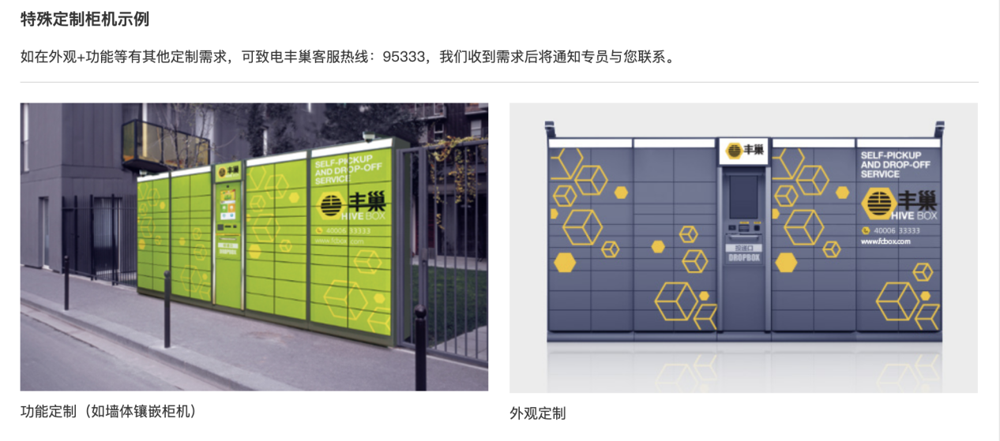
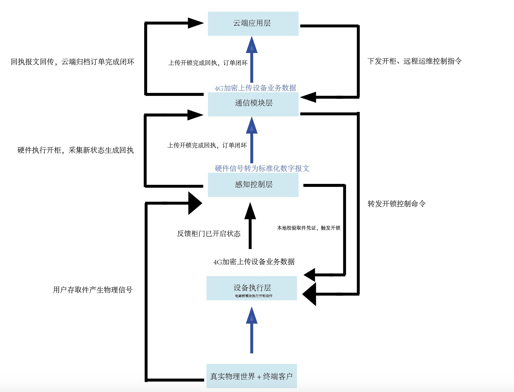
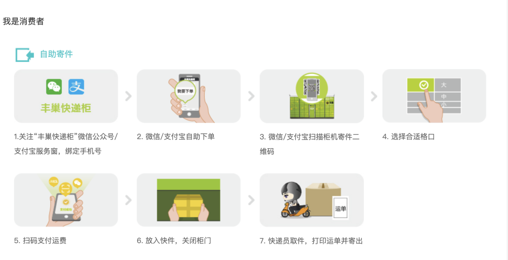
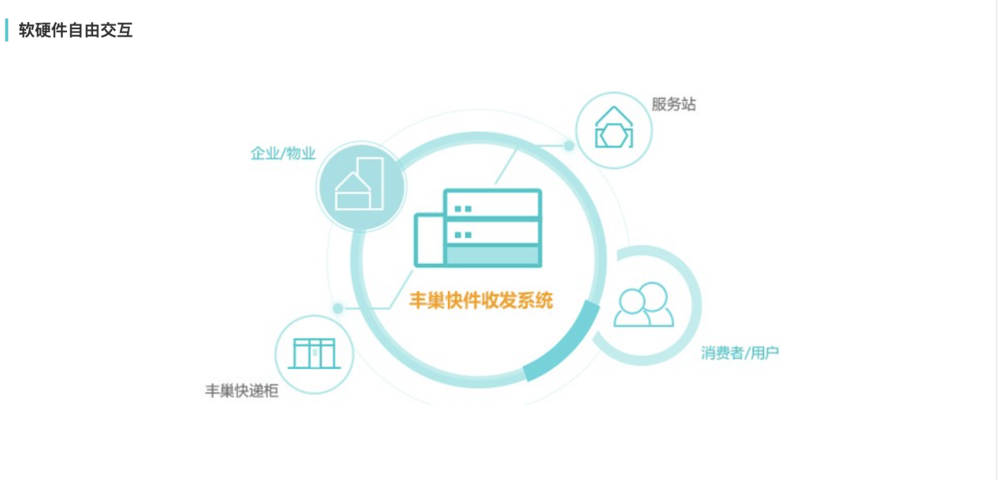
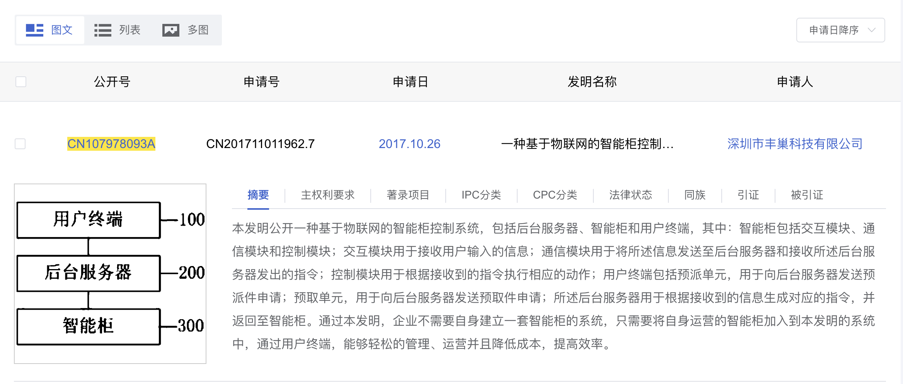

物联网（IoT）运行原理案例分析 —— 以智能快递柜为例
IoT Operation Principle Case Analysis - Smart Express Cabinet Example
一、案例概述
智能快递柜是当前民用物联网领域的典型应用，以丰巢、菜鸟智能柜为代表，广泛应用于社区、写字楼等场景，解决了快递末端配送 "最后一百米" 的效率问题。本案例从物理世界、感知控制、通信传输到云端应用，完整呈现物联网设备的运行逻辑与商业价值。
二、物联网四层架构分析

智能快递柜物联网架构图

1. Cloud 云端应用层（顶层）
标题：Cloud 云端应用层
内容：用户身份校验、验证取件码/快递员权限；生成开锁控制指令；超时计费、推送取件通知；存储开锁、存取件日志；运维设备监控、运营数据分析。
2. Communication Module 通信模块层
标题：Communication Module 通信传输层
内容：4G物联网模组双向传输；上行上传传感器状态、开锁回执；下行转发云端开锁指令；离线缓存业务记录，网络恢复同步数据。
3. Sensors 感知采集层
标题：Sensors 传感器感知层
内容：红外检测包裹、门磁识别柜门开关、震动防撬采集；捕捉用户扫码/输码操作；将物理信号转为数字报文上传。
4. Controller 执行层（独立开锁模块）
标题：Controller 设备执行层
内容：接收感知层与通信层指令；核心单元：电磁锁开锁模块；驱动对应格口弹开柜门；动作完成后反馈执行状态给传感器与通信模块；断网支持本地开锁。
5. Things World 真实世界与用户（底层）
标题：Things World 真实物理场景
内容：智能柜体、快递包裹；消费者、快递员、运维人员；存件、取件、扫码、输码等线下操作；输入末端物流业务需求。
三、丰巢智能柜业务介绍

丰巢智能柜业务介绍
四、丰巢快件收发系统

丰巢快件收发系统
五、丰巢物联网专利（CN107978093A）
用途：官方 IoT 架构、感知 / 控制 / 通信 / 云端完整流程。

丰巢物联网专利架构图（CN107978093A）
六、参考资料补充
3. 快递鸟：丰巢柜系统原理说明
用途：红外传感器、电磁锁、主控板、交互流程。
二、IoT 四层架构运行流程解析
（一）Things World + Customers（真实世界与用户）
这是整个 IoT 系统的起点与最终服务对象，对应现实场景中的物理实体与需求。
在智能快递柜场景中，物理世界包含柜机硬件、包裹、社区环境；用户则分为三类：需要派件的快递员、需要取件的普通用户、负责设备维护的平台运营人员。快递员希望快速完成派件、减少二次配送成本，用户希望随时自主取件，运营人员需要实时掌握设备状态与业务数据，这些真实需求是 IoT 系统存在的核心前提。
（二）Sensors + Controller（感知与控制层）
该层是 IoT 设备的硬件核心，负责采集物理世界信息并执行本地控制，是数据的源头。
智能快递柜的感知与控制单元主要由三部分组成：红外传感器、电磁锁和单片机。红外传感器安装在每个柜格内部，用于检测柜门是否关闭、柜格内是否有包裹；电磁锁负责锁住或弹出柜门，保障包裹安全；单片机作为主控单元，接收传感器采集的信号，记录设备状态，并执行开柜、锁门等基础指令。
具体运行过程为：快递员派件时，单片机收到开柜指令后驱动电磁锁弹开柜门；快递员放入包裹后，红外传感器检测到物品存在，单片机将该柜格状态更新为 "已占用"；用户取件时，单片机验证取件码或扫码信息，验证通过后驱动电磁锁开门；用户取走包裹后，传感器检测到柜格为空，单片机更新状态为 "空闲"。该层设备可脱离网络独立运行，仅能完成本地开柜与状态检测，无法实现远程通知、数据统计等功能。
（三）Communication Module（通信模块层）
通信模块是硬件设备与互联网之间的桥梁，实现数据与指令的双向传输，是普通硬件升级为物联网设备的关键。
智能快递柜采用 4G 物联网模块作为通信单元，类似手机 SIM 卡，依托运营商无线网络实现 24 小时联网，无需依赖家庭或办公 WiFi，适配户外、社区等复杂场景。其运行逻辑分为两个方向：
- 数据上行：单片机将柜门状态、包裹存取记录、设备故障信息等数据打包，通过 4G 模块上传至云端服务器；
- 指令下行：云端服务器收到快递员派件、用户取件的请求后，将 "开柜""状态更新" 等指令通过 4G 模块回传给单片机，由硬件执行对应操作。
（四）Cloud + Social Networking（云端与应用层）
该层是 IoT 系统的 "大脑" 与交互界面，负责数据处理、逻辑运算和人机交互，直接体现物联网的商业价值与效率提升。
云端服务器承担核心功能：永久存储所有包裹的存取记录、设备运行日志；验证用户取件码、快递员身份信息；计算超时费用、推送取件通知；统计热门柜点、取件高峰时段等业务数据。
面向用户的应用分为两类：
- 用户端：用户扫描柜机二维码后跳转至小程序，小程序向云端发起取件请求，云端验证通过后下发开柜指令，用户取件后云端自动记录完成状态，若超时则生成费用账单；
- 运营端：快递员通过 APP 选择空柜、录入包裹信息，云端下发开柜指令后完成派件，同时向用户推送取件通知；运维人员通过后台查看所有柜机的在线状态、故障点位，及时安排维修与补货。
（五）完整运行闭环
用户 / 快递员产生存取需求（真实世界）→ 传感器采集状态、单片机执行控制动作（感知与控制层）→ 数据与指令通过 4G 模块在硬件与云端间传输（通信层）→ 云端处理订单、验证信息并推送通知（云端与应用层）→ 指令回传硬件完成开柜 / 锁门，业务完成后数据沉淀为运营经验（Know How）。整套流程形成 "感知 — 传输 — 运算 — 控制" 的完整闭环，最终实现配送效率提升与商业价值落地。
三、个人研究思考
（一）对 IoT 架构的实践理解
本次小组以丰巢快递柜为研究对象，梳理完整运行流程后，我们不再把 IoT 四层架构看作课本上生硬的理论框架，而是一套适配实际产品的模块化设计思路。感知层专门采集现场物理信息、执行简单动作，通信层负责打通设备与云端的数据通道，云端平台处理计费、身份校验这类复杂业务，应用层面向普通用户提供操作界面，四层各自负责对应的工作，运行时互不干扰。这套分层设计最实用的一点是容错性较强，就算小区网络中断或者云端短暂卡顿，快递柜本地硬件依旧能完成存件、开柜等基础功能，等网络恢复后再同步缓存的数据，不会直接整套设备瘫痪。
（二）IoT 技术对传统模式的优化
小组对比传统上门配送模式与智能快递柜运行模式后发现，人工当面签收的配送方式存在明显短板：快递员需要多次上门投递，人力成本高、整体配送效率低，用户也只能固定时段在家等候，时间适配性很差。依托物联网技术改造后的丰巢快递柜，搭建起全天候无人自助配送体系，从多方优化了原有流程。快递员不用等待收件人，可集中批量存放包裹，大幅节省配送时间；用户可以根据自身作息自由选择取件时间，使用灵活性更高；运营企业依靠云端汇总的存取件数据，分析不同点位的使用热度，合理调整柜机投放数量与格口规格，降低闲置设备带来的运维开销。结合"IoT 创新是工业 4.0 框架"，小组一致认为，物联网的核心作用就是依靠设备互联、数据采集重构传统业务流程，从整条业务链条上提升运行效率。
（三）案例存在的局限与改进方向
结合日常使用体验与资料分析，我们总结出丰巢快递柜作为民用物联网终端存在的几处现实短板。首先设备运行对无线网络依赖性过高，地下室、城郊老旧小区等信号较差的区域，经常出现扫码无响应、数据同步失败的情况；其次每台柜机搭载的物联网卡需要长期缴纳通信费用，持续增加平台运营成本；最后设备安全管控存在漏洞，遇到柜门闭合异常、包裹丢失等问题时，缺少完整有效的溯源记录。针对以上问题，我们小组共同梳理了三条优化思路：一是为柜机增设离线缓存模块，断网期间完整记录所有存取件行为，网络恢复后自动同步数据至云端；二是增加低功耗蓝牙通信方案，借助用户手机临时中转数据，减少物联网卡的长期使用；三是加装摄像头与人脸识别模块，留存每次取件的身份记录，完善包裹安全追溯体系。
四、研究总结
丰巢智能快递柜是生活中十分典型的物联网应用，完整落地了工业 4.0 体系下的四层物联网运行架构。该设备立足于末端快递配送的真实需求，依次完成物理状态感知、跨网络数据传输、云端业务运算、人机交互服务全流程，既解决了快递 "最后一百米" 配送效率低的痛点，也形成了可持续的商业运营模式。通过本次小组案例研究，我们认识到物联网的核心价值并不只是单纯让硬件设备连上网络，而是通过全域数据互通打破各环节的信息壁垒，改造传统线下业务，提升整体运营与服务效率。同时我们小组发现，如果后续开发设备不能一味堆砌联网相关功能，需要结合设备实际使用场景匹配对应的通信方案与分层架构，平衡设备实用性、运行稳定性与制作成本，这也是物联网相关项目能够稳定落地的关键。